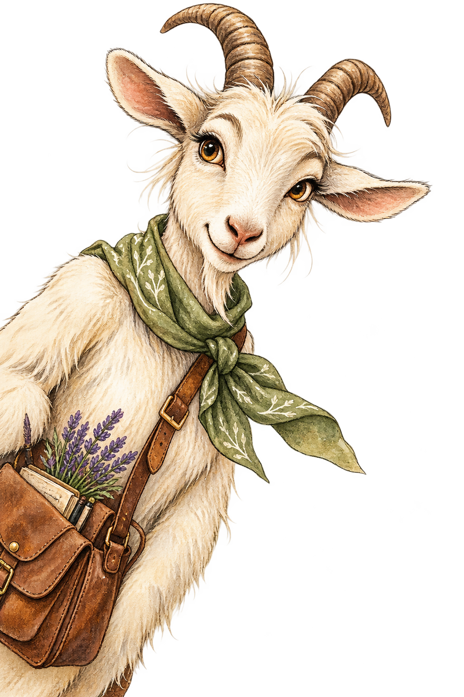
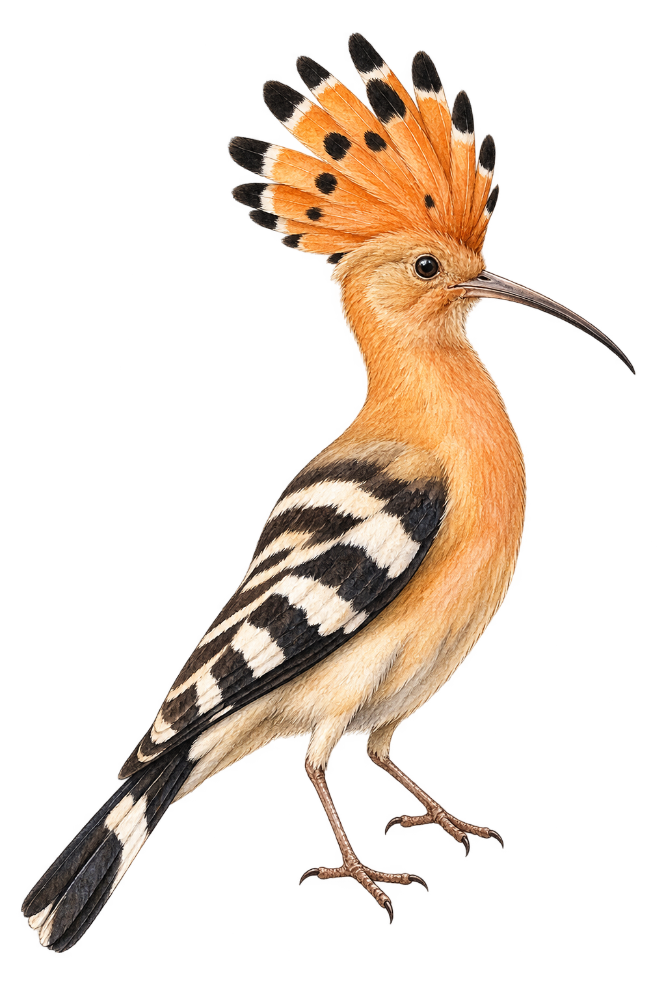
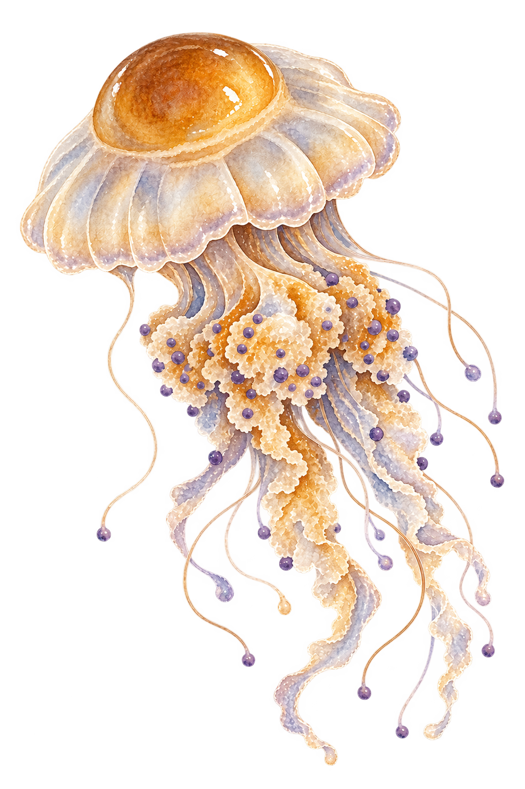

Hello Explorer!
I'm Mara. I carry a notebook, a satchel full of lavender, and far too many stories about Istria.

Hello Explorer!
I'm Mara. I carry a notebook, a satchel full of lavender, and far too many stories about Istria.
Choose a trail and let curiosity do the rest.
Stones remember things.
Istria has been shaped by Romans, Venetians, medieval towns and centuries of people passing through the Adriatic.
A curious piece of Roman Istria
This enormous Roman amphitheatre has stood in Pula for nearly two thousand years. It once hosted public spectacles for thousands of people and is one of the best-preserved Roman arenas still standing today.
Pula sat in a valuable position on the Adriatic and became an important Roman settlement. Its harbour, trade routes and military value helped it grow into a major regional centre.
The arena was built for spectacle. Thousands of spectators could gather to watch gladiatorial contests, animal hunts and other public performances. It was entertainment, politics and social theatre all at once.
A short walk from the Arena takes you to another Roman world: Pula's Forum. Here stands the Temple of Augustus, built around the beginning of the Roman Empire and dedicated to Roma and Emperor Augustus.
Same city, completely different kind of Roman life: less roaring crowd, more politics, religion and public ceremony.
Did that bird just unfold a crown?
Istria is full of places where forests, fields, wetlands and rocky Mediterranean landscapes meet. Sometimes the best discovery starts by simply looking up.
A very stylish visitor to the Istrian countryside

The hoopoe is almost impossible to mistake. It has warm orange colouring, bold black-and-white wings and an extraordinary fan-shaped crest that can suddenly spring upright like a tiny feathered crown.
Most of the time the hoopoe keeps its crest folded back. But when it lands, becomes excited or senses danger, those long feathers can suddenly fan open.
It is basically the avian version of entering a room and making absolutely sure everyone noticed.
That long curved beak is a specialised tool. Hoopoes probe soil, grass and leaf litter for insects, larvae and other small invertebrates hiding underground.
So while the crest gets all the attention, the real working equipment is at the other end.
Palud, near Rovinj, is Istria's ornithological park. Its mix of wetland, woodland and coastal habitat attracts resident birds as well as species stopping during migration.
More than 200 bird species have been recorded there, so Mara recommends binoculars and absolutely no expectations of getting anywhere quickly.
Some landscapes are best understood by eating them.
Truffles, olive oil, wine and local ingredients turn the Istrian landscape into something you can quite literally taste.
Something mysterious beneath the forest floor
Unlike ordinary mushrooms that announce themselves above the soil, truffles grow underground near the roots of certain trees. Finding them means knowing the forest, following scent and sometimes trusting a very enthusiastic dog.
Truffles live in partnership with tree roots. The fungus helps the tree obtain water and minerals, while the tree supplies the fungus with sugars made through photosynthesis.
Their fruiting bodies develop beneath the soil, safely hidden from sunlight and drying air.
Mature truffles release powerful aromas that travel through the soil. A trained dog's nose can detect that scent far better than ours can.
The dog identifies the spot, the hunter digs carefully, and the forest gets to keep most of its secrets.
Istria has forests, soils and tree species that provide suitable conditions for several kinds of truffle. Over time, truffle hunting has also become part of the peninsula's food culture, particularly in its wooded interior.
Which is rather marvellous when you remember that one of the region's celebrated foods is essentially something a dog persuaded a human to dig out of the mud.
Some Adriatic visitors look almost unreal.
Istria's coast is not only beaches and blue water. Beneath the surface lives an entire drifting, glowing, stinging and occasionally very strange world.
A wonderfully strange Mediterranean drifter

This extraordinary Mediterranean jellyfish is nicknamed the fried egg jellyfish because its raised amber-brown centre sits inside a pale translucent bell, making it look remarkably like an egg floating through the sea.
Like other jellyfish, it has specialised stinging cells used for catching prey and defending itself. Its sting is generally considered much less troublesome to people than that of some other Mediterranean jellyfish.
Mara's rule still applies: admire mysterious floating egg, but do not poke mysterious floating egg.
A jellyfish does not have a brain like ours. Instead, it has a simple network of nerves that helps coordinate movement and respond to changes around it.
By repeatedly contracting its bell, it pushes water backwards and propels itself forward, although currents still decide much of where it eventually travels.
The Adriatic hosts several remarkable jellyfish, including the mauve stinger, barrel jellyfish and compass jellyfish.
Some are delicate and nearly transparent, some can sting strongly, and some look as though the sea has started designing its own lamps.